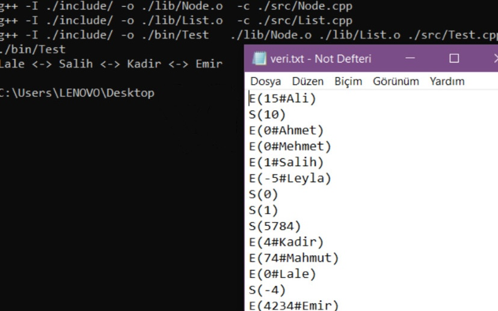

Data Structures Project 1
Project Overview
This project is written in MinGW C++ and reads the Veri.txt file to add and remove data from a doubly linked list. The program is designed to read the Veri.txt file upon startup and perform the operations specified on each line. Data is added to the doubly linked list, and when necessary, elements are shifted to create space or removed to decrease the list's size.
Commands
E(index#name): Adds data to the specified index. If the index does not exist, the data is appended to the end of the list. S(index): Removes data from the specified index. If the index does not exist, the last element of the list is removed. Output Format: After all commands in the file are executed, the resulting list is printed in the following format: Ali Sarı <---> Ayşe Koru <---> Su Beyaz
Technical Details
The project is compiled using make and can be executed with ./bin/program
Language: C++
What I Learned
• Implemented operations to add and remove data from a doubly linked list and developed file reading functionality.
• Gained hands-on experience in advanced data structures, memory management, and algorithm optimization in C++.